Ellipsoidal Calculus¶
Basic Notions¶
We start with basic definitions.
Ellipsoid  in
in
 with center
with center  and shape matrix 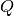 is
the set
and shape matrix 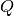 is
the set
(1)
wherein is positive definite ( and
for all nonzero  ).
Here
).
Here  denotes inner
product. The support function of a set
is
denotes inner
product. The support function of a set
is
In particular, the support function of the ellipsoid (1) is
(2)
Although in (1) is assumed to be positive definite,
in practice we may deal with situations when is singular, that
is, with degenerate ellipsoids flat in those directions for which the
corresponding eigenvalues are zero. Therefore, it is useful to give an
alternative definition of an ellipsoid using the expression (2).
Ellipsoid in with center
and shape matrix is the set
(3)
wherein matrix is positive semidefinite ( and
 for all ).
The volume of ellipsoid is
for all ).
The volume of ellipsoid is
(4)
where is the volume of
the unit ball in :
(5)
The distance from to the fixed point 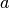
is
(6)
If  , lies outside
; if
, is a boundary
point of ; if
, is an internal
point of .
, lies outside
; if
, is a boundary
point of ; if
, is an internal
point of .
Given two ellipsoids,  and
and
 , the distance between them is
, the distance between them is
(7)
If ,
the ellipsoids have no common points; if
 , the
ellipsoids have one common point - they touch; if
, the
ellipsoids intersect.
, the
ellipsoids have one common point - they touch; if
, the
ellipsoids intersect.
Finding  using QCQP is
using QCQP is
subject to:

where
Checking if  nondegenerate ellipsoids
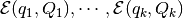 have nonempty
intersection, can be cast as a quadratically constrained quadratic
programming (QCQP) problem:
nondegenerate ellipsoids
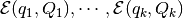 have nonempty
intersection, can be cast as a quadratically constrained quadratic
programming (QCQP) problem:

subject to:
If this problem is feasible, the intersection is nonempty. Given
compact convex set , its polar
set, denoted  , is
, is

or, equivalently,
The properties of the polar set are
- If
 contains the origin,
;
contains the origin,
; - If ,
 ;
; - For any nonsingular matrix
 ,
,
 .
.
If a nondegenerate ellipsoid contains the
origin, its polar set is also an ellipsoid:

The special case is

Given compact sets
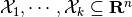, their
geometric (Minkowski) sum is
(8)
Given two compact sets
 , their
geometric (Minkowski) difference is
, their
geometric (Minkowski) difference is
(9)
Ellipsoidal calculus concerns the following set of operations:
- affine transformation of ellipsoid;
- geometric sum of finite number of ellipsoids;
- geometric difference of two ellipsoids;
- intersection of finite number of ellipsoids.
These operations occur in reachability calculation and verification of piecewise affine dynamical systems. The result of all of these operations, except for the affine transformation, is not generally an ellipsoid but some convex set, for which we can compute external and internal ellipsoidal approximations.
Additional operations implemented in the Ellipsoidal Toolbox include
external and internal approximations of intersections of ellipsoids with
hyperplanes, halfspaces and polytopes. Hyperplane in
is the set
(10)
with and fixed.
The distance from ellipsoid to
hyperplane is
(11)
If , the ellipsoid
and the hyperplane do not intersect; if
 , the hyperplane is a
supporting hyperplane for the ellipsoid; if
, the ellipsoid
intersects the hyperplane. The intersection of an ellipsoid with a
hyperplane is always an ellipsoid and can be computed directly.
, the hyperplane is a
supporting hyperplane for the ellipsoid; if
, the ellipsoid
intersects the hyperplane. The intersection of an ellipsoid with a
hyperplane is always an ellipsoid and can be computed directly.
Checking if the intersection of nondegenerate ellipsoids
 intersects hyperplane
, is equivalent to the feasibility check of the QCQP
problem:
intersects hyperplane
, is equivalent to the feasibility check of the QCQP
problem:
subject to:
A hyperplane defines two (closed) halfspaces:
(12)
and
(13)
To avoid confusion, however, we shall further assume that a hyperplane
specifies the halfspace in the sense (12).
In order to refer to the other halfspace, the same hyperplane should be
defined as  .
.
The idea behind the calculation of intersection of an ellipsoid with a halfspace is to treat the halfspace as an unbounded ellipsoid, that is, as the ellipsoid with the shape matrix all but one of whose eigenvalues are . Polytope is the intersection of a finite number of closed halfspaces:
(14)
wherein ![C=[c_1 ~ \cdots ~ c_m]^T\in{\bf R}^{m\times n}](_images/math/1433cbe6516602fafd6b038e814ff937c6e05743.png) and
and
![g=[\gamma_1 ~ \cdots ~ \gamma_m]^T\in{\bf R}^m](_images/math/1ed2eac522cf78de4379b635f636420ca7dfe910.png) .
The distance
from ellipsoid to the polytope
is
.
The distance
from ellipsoid to the polytope
is
(15)
where  comes from
([dist:sub:point]). If
, the ellipsoid and the
polytope do not intersect; if
, the ellipsoid touches
the polytope; if , the
ellipsoid intersects the polytope.
comes from
([dist:sub:point]). If
, the ellipsoid and the
polytope do not intersect; if
, the ellipsoid touches
the polytope; if , the
ellipsoid intersects the polytope.
Checking if the intersection of nondegenerate ellipsoids
intersects polytope
is equivalent to the feasibility check of the QCQP
problem:
subject to:

Operations with Ellipsoids¶
Affine Transformation¶
The simplest operation with ellipsoids is an affine transformation. Let
ellipsoid  , matrix
and vector
, matrix
and vector  . Then
. Then
(16)
Thus, ellipsoids are preserved under affine transformation. If the rows
of  are linearly independent (which implies
are linearly independent (which implies
 ), and
), and  , the affine transformation is
called projection.
, the affine transformation is
called projection.
Geometric Sum¶
Consider the geometric sum (8) in which
, are nondegenerate
ellipsoids
are nondegenerate
ellipsoids  ,
. The resulting set is
not generally an ellipsoid. However, it can be tightly approximated by
the parametrized families of external and internal ellipsoids.
,
. The resulting set is
not generally an ellipsoid. However, it can be tightly approximated by
the parametrized families of external and internal ellipsoids.
Let parameter  be some nonzero vector in .
Then the external approximation
be some nonzero vector in .
Then the external approximation  and the
internal approximation of the sum
are
tight along direction , i.e.,
and the
internal approximation of the sum
are
tight along direction , i.e.,

and

Here the center is
(17)
the shape matrix of the external ellipsoid  is
is
(18)
and the shape matrix of the internal ellipsoid is
(19)
with matrices ,  , being orthogonal
(
, being orthogonal
( ) and such that vectors
are parallel.
) and such that vectors
are parallel.
Varying vector we get exact external and internal
approximations,

For proofs of formulas given in this section, see Kurzhanski and Vályi (1997), Kurzhanski and Varaiya (2000).
One last comment is about how to find orthogonal matrices
that align vectors
 with . Let
with . Let
 and
and  be some unit vectors in .
We have to find matrix
be some unit vectors in .
We have to find matrix  such that
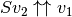. We suggest explicit formulas for the
calculation of this matrix ( Dariyn and Kurzhanski (2012)):
such that
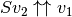. We suggest explicit formulas for the
calculation of this matrix ( Dariyn and Kurzhanski (2012)):
(20)
(21)
(22)
Geometric Difference¶
Consider the geometric difference (9) in which the sets
 and
and  are nondegenerate
ellipsoids and
. We say that ellipsoid
is bigger than ellipsoid
if
are nondegenerate
ellipsoids and
. We say that ellipsoid
is bigger than ellipsoid
if
If this condition is not fulfilled, the geometric difference
 is an empty
set:
is an empty
set:
If is bigger than
and is
bigger than , in other words, if
 ,
,
To check if ellipsoid is bigger than
ellipsoid , we perform simultaneous
diagonalization of matrices and , that is, we
find matrix  such that
such that
where is some diagonal matrix. Simultaneous diagonalization
of and is possible because both are symmetric
positive definite (see Gantmacher (1960)). To find such matrix
, we first do the SVD of :
(23)
Then the SVD of matrix :
(24)
Now, is defined as
(25)
If the biggest diagonal element (eigenvalue) of matrix  is less than or equal to
is less than or equal to  ,
,
 .
.
Once it is established that ellipsoid is
bigger than ellipsoid , we know that their
geometric difference
is a nonempty
convex compact set. Although it is not generally an ellipsoid, we can
find tight external and internal approximations of this set parametrized
by vector  . Unlike geometric sum, however,
ellipsoidal approximations for the geometric difference do not exist for
every direction . Vectors for which the approximations do not
exist are called bad directions.
. Unlike geometric sum, however,
ellipsoidal approximations for the geometric difference do not exist for
every direction . Vectors for which the approximations do not
exist are called bad directions.
Given two ellipsoids and
with
, is a
bad direction if

in which  is a minimal root of the equation
is a minimal root of the equation
To find , compute matrix by (23)-(25)
and define

If is not a bad direction, we can find tight external and
internal ellipsoidal approximations and
 such that
such that

and

The center is
(26)
the shape matrix of the internal ellipsoid  is
is
and the shape matrix of the external ellipsoid is
(27)
Here is an orthogonal matrix such that vectors
and  are parallel. is
found from (20)-(22), with
are parallel. is
found from (20)-(22), with  and
.
and
.
Running over all unit directions that are not bad, we get

For proofs of formulas given in this section, see Kurzhanski and Vályi (1997).
Geometric Difference-Sum¶
Given ellipsoids ,
and  , it is
possible to compute families of external and internal approximating
ellipsoids for
, it is
possible to compute families of external and internal approximating
ellipsoids for
(28)
parametrized by direction , if this set is nonempty
().
First, using the result of the previous section, for any direction
that is not bad, we obtain tight external
and internal
 approximations of the set
.
approximations of the set
.
The second and last step is, using the result of section 2.2.2, to find
tight external ellipsoidal approximation
of the sum
 , and
tight internal ellipsoidal approximation
for the sum
, and
tight internal ellipsoidal approximation
for the sum
 .
.
As a result, we get
and
Running over all unit vectors that are not bad, this
translates to
Geometric Sum-Difference¶
Given ellipsoids  ,
and , it is
possible to compute families of external and internal approximating
ellipsoids for
,
and , it is
possible to compute families of external and internal approximating
ellipsoids for
(29)
parametrized by direction , if this set is nonempty
().
First, using the result of section 2.2.2, we obtain tight external
and internal
ellipsoidal approximations of the
set . In order
for the set (29) to be nonempty, inclusion
must be
true for any . Note, however, that even if (29) is
nonempty, it may be that
 , then
internal approximation for this direction does not exist.
, then
internal approximation for this direction does not exist.
Assuming that (29) is nonempty and
, the second
step would be, using the results of section 2.2.3, to compute tight
external ellipsoidal approximation
 of the difference
,
which exists only if is not bad, and tight internal
ellipsoidal approximation
of the difference
,
which exists only if is not bad, and tight internal
ellipsoidal approximation  of the
difference
of the
difference
 ,
which exists only if is not bad for this difference.
,
which exists only if is not bad for this difference.
If approximation exists, then

and

If approximation exists, then

and

For any fixed direction it may be the case that neither
external nor internal tight ellipsoidal approximations exist.
Intersection of Ellipsoid and Hyperplane¶
Let nondegenerate ellipsoid and hyperplane
be such that
. In other words,
The intersection of ellipsoid with hyperplane, if nonempty, is always an ellipsoid. Here we show how to find it.
First of all, we transform the hyperplane into by the affine transformation

where is an orthogonal matrix found by (20)-(22)
with and ![v_2=[1~0~\cdots~0]^T](_images/math/e2a4206b0fc420afa156e56f648b0700ce6fbf8e.png) . The ellipsoid in
the new coordinates becomes with
. The ellipsoid in
the new coordinates becomes with
Define matrix  ;
;  is its element in
position
is its element in
position  ,
,  is the first column of
is the first column of  without the first element, and
without the first element, and  is the submatrix of
obtained by stripping of its first row and first
column:
is the submatrix of
obtained by stripping of its first row and first
column:
The ellipsoid resulting from the intersection is
 with
with
![\begin{aligned}
w' & = q' + q_1'\left[\begin{array}{c}
-1\\
\bar{M}^{-1}\bar{m}\end{array}\right],\\
W' & = \left(1-q_1'^2(m_{11}-
\langle\bar{m},\bar{M}^{-1}\bar{m}\rangle)\right)\left[\begin{array}{c|cl}
0 & & {\bf 0}\\
& \\
\hline
& \\
{\bf 0} & & \bar{M}^{-1}\end{array}\right],\end{aligned}](_images/math/1f461c17d20992f2431d22c78516f852193d069a.png)
in which  represents the first element of vector .
represents the first element of vector .
Finally, it remains to do the inverse transform of the coordinates to
obtain ellipsoid  :
:

Intersection of Ellipsoid and Ellipsoid¶
Given two nondegenerate ellipsoids and
,
 implies that
implies that
This intersection can be approximated by ellipsoids from the outside
and from the inside. Trivially, both and
are external approximations of this
intersection. Here, however, we show how to find the external
ellipsoidal approximation of minimal volume.
Define matrices

Minimal volume external ellipsoidal approximation
of the intersection
 is determined
from the set of equations:
is determined
from the set of equations:
(30)
(31)
(32)
(33)
(34)
with . We substitute  ,
,
 ,
,  defined in (31)-(33) into
(34) and get a polynomial of degree with respect to
defined in (31)-(33) into
(34) and get a polynomial of degree with respect to
 , which has only one root in the interval ,
. Then, substituting
, which has only one root in the interval ,
. Then, substituting  into
(30)-(33), we obtain and . Special
cases are
into
(30)-(33), we obtain and . Special
cases are  , whence
, whence
 , and
, and
 , whence
. These situations
may occur if, for example, one ellipsoid is contained in the other:
, whence
. These situations
may occur if, for example, one ellipsoid is contained in the other:

The proof that the system of equations (30)-(34) correctly
defines the minimal volume external ellipsoidal approximationi of the
intersection is
given in L. Ros (2002).
To find the internal approximating ellipsoid
 ,
define
,
define
(35)
(36)
Notice that (35) and (36) are QCQP problems. Parameters
 and are invariant with respect to affine
coordinate transformation and describe the position of ellipsoids
, with
respect to each other:
and are invariant with respect to affine
coordinate transformation and describe the position of ellipsoids
, with
respect to each other:
![\beta_1\geqslant1,~\beta_2\geqslant1 & \Rightarrow
{\bf int}({\mathcal E}(q_1,Q_1)\cap{\mathcal E}(q_2,Q_2))=\emptyset, \\
\beta_1\geqslant1,~\beta_2\leqslant1 & \Rightarrow {\mathcal E}(q_1,Q_1)\subseteq{\mathcal E}(q_2,Q_2), \\
\beta_1\leqslant1,~\beta_2\geqslant1 & \Rightarrow {\mathcal E}(q_2,Q_2)\subseteq{\mathcal E}(q_1,Q_1), \\
\beta_1<1,~\beta_2<1 & \Rightarrow
{\bf int}({\mathcal E}(q_1,Q_1)\cap{\mathcal E}(q_2,Q_2))\neq\emptyset \\
&\mbox{and} ~ {\mathcal E}(q_1,Q_1)\not\subseteq{\mathcal E}(q_2,Q_2) \\
&\mbox{and} ~ {\mathcal E}(q_2,Q_2)\not\subseteq{\mathcal E}(q_1,Q_1).](_images/math/7c03a765cb1b25fd1f45a4c98464a5aa055ea900.png)
Define parametrized family of internal ellipsoids
 with
with
(37)
(38)
The best internal ellipsoid in the class (37)-(38), namely, such that
for all  , is specified by
the parameters
, is specified by
the parameters
(39)
with

It is the ellipsoid that we look for: . Two special cases are

and

The method of finding the internal ellipsoidal approximation of the intersection of two ellipsoids is described in Vazhentsev (1999).
Intersection of Ellipsoid and Halfspace¶
Finding the intersection of ellipsoid and halfspace can be reduced to
finding the intersection of two ellipsoids, one of which is unbounded.
Let be a nondegenerate ellipsoid and let
define the halfspace

We have to determine if the intersection
is empty, and if not,
find its external and internal ellipsoidal approximations,
 and . Two
trivial situations are:
and . Two
trivial situations are:
 and
and
 , which implies that
, which implies that
 ;
;- and
, so that
, and then
.
In case  , i.e. the
ellipsoid intersects the hyperplane,
, i.e. the
ellipsoid intersects the hyperplane,

with
(40)
(41)
being the biggest eigenvalue of matrix
. After defining  , we obtain
from equations (30)-(34), and
from (37)-(38),
(39).
, we obtain
from equations (30)-(34), and
from (37)-(38),
(39).
Remark. Notice that matrix  has rank , which
makes it singular for . Nevertheless, expressions
(30)-(31), (37)-(38) make sense because
has rank , which
makes it singular for . Nevertheless, expressions
(30)-(31), (37)-(38) make sense because
 is nonsingular, and
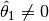.
is nonsingular, and
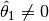.
To find the ellipsoidal approximations and
of the intersection of ellipsoid
and polytope ,
, , such that
we first compute

wherein is the halfspace defined by the
first row of matrix  , , and the first element of
vector
, , and the first element of
vector  ,
,  . Then, one by one, we get
. Then, one by one, we get
![\begin{aligned}
& & {\mathcal E}(q^-_2,Q^-_2)\subseteq{\mathcal E}(q^-_1,Q^-_1)\cap{\bf S}(c_2,\gamma_2), ~~~
{\mathcal E}(q^+_1,Q^+_1)\cap{\bf S}(c_2,\gamma_2)\subseteq{\mathcal E}(q^+_2,Q^+_2), \\
& & {\mathcal E}(q^-_3,Q^-_3)\subseteq{\mathcal E}(q^-_2,Q^-_2)\cap{\bf S}(c_3,\gamma_3), ~~~
{\mathcal E}(q^+_2,Q^+_2)\cap{\bf S}(c_3,\gamma_3)\subseteq{\mathcal E}(q^+_3,Q^+_3), \\
& & \cdots \\
& & {\mathcal E}(q^-_m,Q^-_m)\subseteq{\mathcal E}(q^-_{m-1},Q^-_{m-1})\cap{\bf S}(c_m,\gamma_m), ~~~
{\mathcal E}(q^+_{m-1},Q^+_{m-1})\cap{\bf S}(c_m,\gamma_m)\subseteq{\mathcal E}(q^+_m,Q^+_m), \\\end{aligned}](_images/math/31219576174d72fc7ceedf88d2464117992bc863.png)
The resulting ellipsoidal approximations are
Checking if one ellipsoid contains another¶
Theorem of alternatives, also known as -procedure Boyd and
Vandenberghe (2004), states that the implication

where  are symmetric matrices,
are symmetric matrices,
 , ,
, ,  , holds if
and only if there exists such that
, holds if
and only if there exists such that
![\left[\begin{array}{cc}
A_2 & b_2\\
b_2^T & c_2\end{array}\right]
\preceq
\lambda\left[\begin{array}{cc}
A_1 & b_1\\
b_1^T & c_1\end{array}\right].](_images/math/0e9d15b88527c5e029b75f7769b009378ea7a390.png)
By -procedure,
(both
ellipsoids are assumed to be nondegenerate) if and only if the following
SDP problem is feasible:
subject to:
where is the variable.
Minimum Volume Ellipsoids¶
The minimum volume ellipsoid that contains set is called
Löwner-John ellipsoid of the set . To characterize it we
rewrite general ellipsoid as

where

For positive definite matrix , the volume of
is proportional to . So,
finding the minimum volume ellipsoid containing can be
expressed as semidefinite programming (SDP) problem
subject to:
where the variables are and
, and there is an implicit constraint
( is positive definite). The objective and
constraint functions are both convex in and  , so this
problem is convex. Evaluating the constraint function, however, requires
solving a convex maximization problem, and is tractable only in certain
special cases.
, so this
problem is convex. Evaluating the constraint function, however, requires
solving a convex maximization problem, and is tractable only in certain
special cases.
For a finite set  , an
ellipsoid covers if and only if it covers its convex hull. So,
finding the minimum volume ellipsoid covering is the same as
finding the minimum volume ellipsoid containing the polytope
, an
ellipsoid covers if and only if it covers its convex hull. So,
finding the minimum volume ellipsoid covering is the same as
finding the minimum volume ellipsoid containing the polytope
 . The SDP problem is
. The SDP problem is
subject to:
We can find the minimum volume ellipsoid containing the union of
ellipsoids . Using the fact
that for
 if and only if
there exists
if and only if
there exists  such that
such that
Changing variable , we get convex SDP in the
variables ,  , and
:
, and
:
subject to:
After and are found,
The results on the minimum volume ellipsoids are explained and proven in Boyd and Vandenberghe (2004).
Maximum Volume Ellipsoids¶
Consider a problem of finding the maximum volume ellipsoid that lies
inside a bounded convex set with nonempty interior. To
formulate this problem we rewrite general ellipsoid
as
where  , so the volume of is
proportional to .
, so the volume of is
proportional to .
The maximum volume ellipsoid that lies inside can be found by
solving the following SDP problem:
subject to:

in the variables  - symmetric matrix,
and , with implicit constraint ,
where
- symmetric matrix,
and , with implicit constraint ,
where  is the indicator function:
is the indicator function:
In case of polytope,  with defined in
(14), the SDP has the form
with defined in
(14), the SDP has the form

subject to:
We can find the maximum volume ellipsoid that lies inside the
intersection of given ellipsoids
. Using the fact that for
 if and only if there exists such that
if and only if there exists such that
![\left[\begin{array}{cc}
-\lambda_i - q^TQ_i^{-1}q + 2q_i^TQ_i^{-1}q - q_i^TQ_i^{-1}q_i + 1 & (Q_i^{-1}q-Q_i^{-1}q_i)^TB\\
B(Q_i^{-1}q-Q_i^{-1}q_i) & \lambda_iI-BQ_i^{-1}B\end{array}\right] \succeq 0.](_images/math/58f2fc326e8a517635f35be7103247ef557a77b1.png)
To find the maximum volume ellipsoid, we solve convex SDP in variables
 , , and :
, , and :
subject to:
![\begin{aligned}
\lambda_i & > 0, \\
\left[\begin{array}{ccc}
1-\lambda_i & 0 & (q - q_i)^T\\
0 & \lambda_iI & B\\
q - q_i & B & Q_i\end{array}\right] & \succeq 0, ~~~ i=1..m.\end{aligned}](_images/math/099017df42de1d1cb4c003cfa90e314962c71731.png)
After and are found,
The results on the maximum volume ellipsoids are explained and proven in Boyd and Vandenberghe (2004).
Reachability¶
Basics of Reachability Analysis¶
Systems without disturbances¶
Consider a general continuous-time
(42)
or discrete-time dynamical system
(43)
wherein  is time [1], is the state,
is time [1], is the state,
 is the control, and
is the control, and  is a measurable
vector function taking values in . [2] The control
values
is a measurable
vector function taking values in . [2] The control
values  are restricted to a closed compact control set
are restricted to a closed compact control set
 . An open-loop control does not
depend on the state,
. An open-loop control does not
depend on the state,  ; for a closed-loop control,
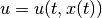.
; for a closed-loop control,
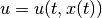.
The (forward) reach set 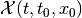 at time
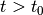 from the initial position 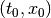 is the set of
all states 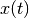 reachable at time by system (42),
or (43), with 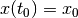 through all possible controls
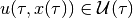,
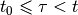. For a given set of initial states
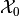, the reach set
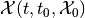 is
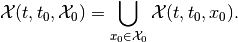
Here are two facts about forward reach sets.
is the same for open-loop and closed-loop control.
satisfies the semigroup property,
(44)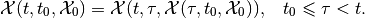
For linear systems
(45)
with matrices  in
in  and
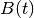 in
and
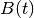 in  . For continuous-time linear
system the state transition matrix is
. For continuous-time linear
system the state transition matrix is

which for constant 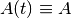 simplifies as

For discrete-time linear system the state transition matrix is

which for constant simplifies as
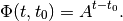
If the state transition matrix is invertible,
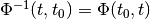. The transition matrix is
always invertible for continuous-time and for sampled discrete-time
systems. However, if for some  ,
,  ,
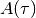 is degenerate (singular),
,
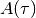 is degenerate (singular),
 , is also degenerate
and cannot be inverted.
, is also degenerate
and cannot be inverted.
Following Cauchy’s formula, the reach set for a linear system can be expressed as
(46)
in continuous-time, and as
(47)
in discrete-time case.
The operation ‘ ’ is the geometric sum, also known as
Minkowski sum. [3] The geometric sum and linear (or affine)
transformations preserve compactness and convexity. Hence, if the
initial set and the control sets
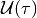, , are compact and
convex, so is the reach set
.
’ is the geometric sum, also known as
Minkowski sum. [3] The geometric sum and linear (or affine)
transformations preserve compactness and convexity. Hence, if the
initial set and the control sets
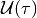, , are compact and
convex, so is the reach set
.
The backward reach set  for the target
position 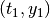 is the set of all states
for the target
position 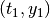 is the set of all states  for
which there exists some control
,
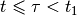, that steers system (42), or (43) to
the state 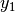 at time
for
which there exists some control
,
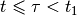, that steers system (42), or (43) to
the state 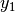 at time  . For the target set
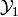 at time , the backward reach set
. For the target set
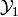 at time , the backward reach set
 is
is
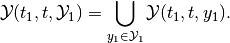
The backward reach set
is the largest weakly
invariant set with respect to the target set and
time values and . [4]
Remark. Backward reach set can be computed for continuous-time system only if the solution of (42) exists for 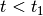; and for discrete-time system only if the right hand side of (43) is invertible [5].
These two facts about the backward reach set 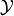 are similar to those for forward reach sets.
- is the same for
open-loop and closed-loop control.
- satisfies the semigroup
property,
(48)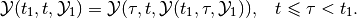
For the linear system (45) the backward reach set can be expressed as
(49)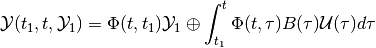
in the continuous-time case, and as
(50)
in discrete-time case. The last formula makes sense only for discrete-time linear systems with invertible state transition matrix. Degenerate discrete-time linear systems have unbounded backward reach sets and such sets cannot be computed with available software tools.
Just as in the case of forward reach set, the backward reach set of a
linear system is compact
and convex if the target set and the control sets
, , are compact and
convex.
Remark. In the computer science literature the reach set is said to be the result of operator post, and the backward reach set is the result of operator pre. In the control literature the backward reach set is also called the solvability set.
Systems with disturbances¶
Consider the continuous-time dynamical system with disturbance
(51)
or the discrete-time dynamical system with disturbance
(52)
in which we also have the disturbance input 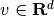 with values 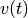 restricted to a closed compact set 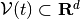.
In the presence of disturbances the open-loop reach set (OLRS) is different from the closed-loop reach set (CLRS).
Given the initial time  , the set of initial states
, and terminal time , there are two types
of OLRS.
, the set of initial states
, and terminal time , there are two types
of OLRS.
The maxmin open-loop reach set
 is the set
of all states
is the set
of all states  , such that for any disturbance
, such that for any disturbance
 , there exist an initial state
, there exist an initial state
 and a control
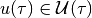, , that
steers system (51) or (52) from to
and a control
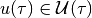, , that
steers system (51) or (52) from to
 .
.
The minmax open-loop reach set
 is the set
of all states , such that there exists a control
that for all disturbances
, ,
assigns an initial state and steers system
(51), or (52), from to .
is the set
of all states , such that there exists a control
that for all disturbances
, ,
assigns an initial state and steers system
(51), or (52), from to .
In the maxmin case the control is chosen after knowing the disturbance over the entire time interval 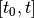, whereas in the minmax case the control is chosen before any knowledge of the disturbance. Consequently, the OLRS do not satisfy the semigroup property.
The terms ‘maxmin’ and ‘minmax’ come from the fact that
is the
subzero level set of the value function
(53)
i.e.,
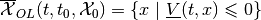,
and is the
subzero level set of the value function
(54)
in which 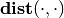 denotes Hausdorff semidistance. [6] Since 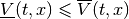, 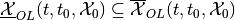.
Note that maxmin and minmax OLRS imply guarantees: these are states that can be reached no matter what the disturbance is, whether it is known in advance (maxmin case) or not (minmax case). The OLRS may be empty.
Fixing time instant 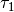, 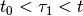, define the piecewise maxmin open-loop reach set with one correction,
(55)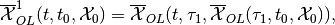
and the piecewise minmax open-loop reach set with one correction,
(56)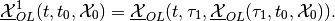
The piecewise maxmin OLRS
 is the
subzero level set of the value function
is the
subzero level set of the value function
(57)
with 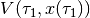 given by (53), which yields

and thus,

On the other hand, the piecewise minmax OLRS 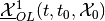 is the subzero level set of the value function
(58)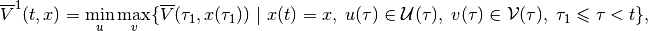
with given by (54), which yields

and thus,
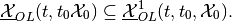
We can now recursively define piecewise maxmin and minmax OLRS with
corrections for  . The maxmin
piecewise OLRS with corrections is
. The maxmin
piecewise OLRS with corrections is
(59)
which is the subzero level set of the corresponding value function
(60)
The minmax piecewise OLRS with corrections is
(61)
which is the subzero level set of the corresponding value function
(62)
From (57), (58), (60) and (62) it follows that
Hence,
(63)
We call
(64)
the maxmin closed-loop reach set of system (51) or (52) at
time , and we call
(65)
the minmax closed-loop reach set of system (51) or (52) at
time .
Given initial time and the set of initial
states , the maxmin CLRS
of system
(51) or (52) at time , is the set of all states
, for each of which and for every disturbance
, there exist an initial state
and a control
, such that the trajectory
 satisfying
satisfying
 and
and
in the continuous-time case, or
in the discrete-time case, with , is such
that .
Given initial time and the set of initial states , the
maxmin CLRS  of system
(51) or (52), at time , is the set of all states
, for each of which there exists a control
, and for every disturbance
there exists an initial state
, such that the trajectory
of system
(51) or (52), at time , is the set of all states
, for each of which there exists a control
, and for every disturbance
there exists an initial state
, such that the trajectory
 satisfying
and
satisfying
and
in the continuous-time case, or
in the discrete-time case, with , is such
that .
By construction, both
maxmin and minmax CLRS satisfy the semigroup property (44).
For some classes of dynamical systems and some types of constraints on
initial conditions, controls and disturbances, the maxmin and minmax
CLRS may coincide. This is the case for continuous-time linear systems
with convex compact bounds on the initial set, controls and disturbances
under the condition that the initial set is large
enough to ensure that
 is nonempty for
some small .
is nonempty for
some small .
Consider the linear system case,
(66)
where and are as in (45), and
takes its values in  .
.
The maxmin OLRS for the continuous-time linear system can be expressed through set valued integrals,
(67)
and for discrete-time linear system through set-valued sums,
(68)
Similarly, the minmax OLRS for the continuous-time linear system is
(69)
and for the discrete-time linear system it is
(70)
The operation ‘ ’ is geometric difference, also known as
Minkowski difference. [7]
’ is geometric difference, also known as
Minkowski difference. [7]
Now consider the piecewise OLRS with corrections. Expression
(59) translates into
(71)
in the continuous-time case, and for the discrete-time case into
(72)
Expression (61) translates into
(73)
in the continuous-time case, and for the discrete-time case into
(74)
Since for any
 it is true that
it is true that
from (71), (73) and from (72),
(74), it is clear that (63) is true.
For linear systems, if the initial set , control
bounds and disturbance bounds
, , are compact and
convex, the CLRS
and
are
compact and convex, provided they are nonempty. For continuous-time
linear systems,
 .
.
Just as for forward reach sets, the backward reach sets can be open-loop (OLBRS) or closed-loop (CLBRS).
Given the terminal time and target set
, the maxmin open-loop backward reach set
 of system
(51) or (52) at time , is the set of all
of system
(51) or (52) at time , is the set of all  ,
such that for any disturbance there
exists a terminal state and control
, , which
steers the system from
,
such that for any disturbance there
exists a terminal state and control
, , which
steers the system from  to .
to .
is the
subzero level set of the value function
(75)
Given the terminal time and target set
, the minmax open-loop backward reach set
of system
(51) or (52) at time , is the set of all ,
such that there exists a control
that for all disturbances  ,
, assigns a terminal state
and steers the system from
to .
is the
subzero level set of the value function
,
, assigns a terminal state
and steers the system from
to .
is the
subzero level set of the value function
(76)
Remark. The backward reach set can be computed for a continuous-time system only if the solution of (51) exists for , and for a discrete-time system only if the right hand side of (52) is invertible.
Similarly to the forward reachability case, we construct piecewise OLBRS with one correction at time , . The piecewise maxmin OLBRS with one correction is
(77)
and it is the subzero level set of the function
(78)
The piecewise minmax OLBRS with one correction is
(79)
and it is the subzero level set of the function
(80)
Recursively define maxmin and minmax OLBRS with corrections
for  . The maxmin OLBRS with
corrections is
. The maxmin OLBRS with
corrections is
(81)
which is the subzero level set of function
(82)
The minmax OLBRS with corrections is
(83)
which is the subzero level set of the function
(84)
From (78), (80), (82) and (84) it follows that

Hence,
(85)
We say that
(86)
is the maxmin closed-loop backward reach set of system (51) or
(52) at time .
We say that
(87)
is the minmax closed-loop backward reach set of system (51) or
(52) at time .
Given the terminal time and
target set , the maxmin CLBRS
 of system
(51) or (52) at time , is the set of all states
, for each of which for every disturbance
there exists terminal state
and control
of system
(51) or (52) at time , is the set of all states
, for each of which for every disturbance
there exists terminal state
and control
 that assigns trajectory
that assigns trajectory
 satisfying
satisfying

in continuous-time case, or
in discrete-time case, with , such that
 and .
and .
Given the terminal time and target set , the
minmax CLBRS of system
([ctds2]) or [dtds2] at time , is the set of all states
, for each of which there exists control
that for every disturbance
assigns terminal state
and trajectory
 satisfying
satisfying

in the continuous-time case, or

in the discrete-time case, with , such that
and .
Both maxmin and minmax CLBRS satisfy the semigroup property (48).
The maxmin OLBRS for the continuous-time linear system can be expressed through set valued integrals,
(88)
and for the discrete-time linear system through set-valued sums,
(89)
Similarly, the minmax OLBRS for the continuous-time linear system is
(90)
and for the discrete-time linear system it is
(91)
Now consider piecewise OLBRS with corrections. Expression
(81) translates into
(92)
in the continuous-time case, and for the discrete-time case into
(93)
Expression (83) translates into
(94)
in the continuous-time case, and for the discrete-time case into
(95)
For continuous-time linear systems under the condition that the target set is large enough to ensure that is nonempty for some small .
Computation of backward reach sets for discrete-time linear systems makes sense only if the state transition matrix is invertible.
If the target set , control sets
and disturbance sets
, , are compact and
convex, then CLBRS
and
are
compact and convex, if they are nonempty.
Reachability problem¶
Reachability analysis is concerned with the computation of the forward
and backward
reach sets (the reach sets
may be maxmin or minmax) in a way that can effectively meet requests
like the following:
For the given time interval , determine whether the system can be steered into the given target set . In other words, is the set nonempty? And if the answer is ‘yes’, find a control that steers the system to the target set (or avoids the target set). [8]
If the target set is reachable from the given initial condition
 in the time
interval , find the shortest time to reach
,
in the time
interval , find the shortest time to reach
,
Given the terminal time
, target set
and time find the set of states
starting at time from which the system can reach
within time interval ![[t, t_1]](_images/math/8c88a62e87aa508a4d9c2d643500df142073b3bd.png) . In
other words, find
. In
other words, find
 .
.Find a closed-loop control that steers a system with disturbances to the given target set in given time.
Graphically display the projection of the reach set along any specified two- or three-dimensional subspace.
For linear systems, if the initial set , target
set , control bounds  and disturbance bounds are compact and
convex, so are the forward
and backward reach sets.
Hence reachability analysis requires the computationally effective
manipulation of convex sets, and performing the set-valued operations of
unions, intersections, geometric sums and differences.
and disturbance bounds are compact and
convex, so are the forward
and backward reach sets.
Hence reachability analysis requires the computationally effective
manipulation of convex sets, and performing the set-valued operations of
unions, intersections, geometric sums and differences.
Existing reach set computation tools can deal reliably only with linear systems with convex constraints. A claim that certain tool or method can be used effectively for nonlinear systems must be treated with caution, and the first question to ask is for what class of nonlinear systems and with what limit on the state space dimension does this tool work? Some “reachability methods for nonlinear systems” reduce to the local linearization of a system followed by the use of well-tested techniques for linear system reach set computation. Thus these approaches in fact use reachability methods for linear systems.
Ellipsoidal Method¶
Continuous-time systems¶
Consider the system
(96)
in which is the state, is
the control and is the disturbance. ,
and are continuous and take their values in
, and
respectively. Control  and
disturbance are measurable functions restricted by
ellipsoidal constraints:
and
disturbance are measurable functions restricted by
ellipsoidal constraints:  and
and  . The set of initial states
at initial time is assumed to be the ellipsoid
.
. The set of initial states
at initial time is assumed to be the ellipsoid
.
The reach sets for systems with disturbances computed by the Ellipsoidal Toolbox are CLRS. Henceforth, when describing backward reachability, reach sets refer to CLRS or CLBRS. Recall that for continuous-time linear systems maxmin and minmax CLRS coincide, and the same is true for maxmin and minmax CLBRS.
If the matrix , the system (96) becomes an
ordinary affine system with known  . If
. If
 , the system becomes linear. For these two cases
( or
, the system becomes linear. For these two cases
( or  ) the reach set is as given in
Definition [def:sub:olrs], and so the reach set will be denoted as
.
) the reach set is as given in
Definition [def:sub:olrs], and so the reach set will be denoted as
.
The reach set  is a
symmetric compact convex set, whose center evolves in time according to
is a
symmetric compact convex set, whose center evolves in time according to
(97)
Fix a vector  , and consider the solution
, and consider the solution
 of the adjoint equation
of the adjoint equation
(98)
which is equivalent to

If the reach set is nonempty, there exist tight external and tight internal approximating ellipsoids and , respectively, such that
(99)
and
(100)
The equation for the shape matrix of the external ellipsoid is
(101)
(102)
in which
and the orthogonal matrix  ()
is determined by the equation
()
is determined by the equation
In the presence of disturbance, if the reach set is empty, the matrix
becomes sign indefinite. For a system without
disturbance, the terms containing and  vanish
from the equation (101).
vanish
from the equation (101).
The equation for the shape matrix of the internal ellipsoid is
(103)
(104)
in which

and the orthogonal matrix is determined by the equation

Similarly to the external case, the terms containing and
vanish from the equation ([fwdint1]) for a system without
disturbance.
The point where the external and internal ellipsoids touch the boundary of the reach set is given by

The boundary points  form trajectories, which we call
extremal trajectories. Due to the nonsingular nature of the state
transition matrix , every boundary point of the reach
set belongs to an extremal trajectory. To follow an extremal trajectory
specified by parameter
form trajectories, which we call
extremal trajectories. Due to the nonsingular nature of the state
transition matrix , every boundary point of the reach
set belongs to an extremal trajectory. To follow an extremal trajectory
specified by parameter  , the system has to start at time
at initial state
, the system has to start at time
at initial state
(105)
In the absence of disturbances, the open-loop control
(106)
steers the system along the extremal trajectory defined by the vector
. When a disturbance is present, this control keeps the
system on an extremal trajectory if and only if the disturbance plays
against the control always taking its extreme values.
Expressions (99) and (100) lead to the following fact,

In practice this means that the more values of we use to
compute and  , the better will be our
approximation.
, the better will be our
approximation.
Analogous results hold for the backward reach set.
Given the terminal time and ellipsoidal target set
, the CLBRS
 ,
, if it is nonempty, is a symmetric compact convex set
whose center is governed by
,
, if it is nonempty, is a symmetric compact convex set
whose center is governed by
(107)
Fix a vector  , and consider
, and consider
(108)
If the backward reach set
is nonempty, there
exist tight external and tight internal approximating ellipsoids
 and
respectively, such that
and
respectively, such that
(109)
and
(110)
The equation for the shape matrix of the external ellipsoid is
(111)
(112)
in which

and the orthogonal matrix satisfies the equation

The equation for the shape matrix of the internal ellipsoid is
(113)
(114)
in which

and the orthogonal matrix is determined by the equation

Just as in the forward reachability case, the terms containing
and vanish from equations (111) and
(113) in the absence of disturbances. The boundary value problems
(107), (111) and (113) are converted to the initial
value problems by the change of variables  .
.

Remark. In expressions (101), (103), (111) and
(113) the terms  and
and
 may not be well defined for some vectors
, because matrices and
may not be well defined for some vectors
, because matrices and
 may be singular. In such cases, we set these
entire expressions to zero.
may be singular. In such cases, we set these
entire expressions to zero.
Discrete-time systems¶
Consider the discrete-time linear system,
(115)
in which is the state,
 is the control bounded by the ellipsoid
is the control bounded by the ellipsoid
 ,
,  is disturbance
bounded by ellipsoid
is disturbance
bounded by ellipsoid  , and matrices
, , are in
, ,
respectively. Here we shall assume
to be nonsingular. [9] The set of initial conditions at
initial time is ellipsoid .
, and matrices
, , are in
, ,
respectively. Here we shall assume
to be nonsingular. [9] The set of initial conditions at
initial time is ellipsoid .
Ellipsoidal Toolbox computes maxmin and minmax CLRS
 and
and
 for
discrete-time systems.
for
discrete-time systems.
If matrix , the system (115) becomes an
ordinary affine system with known . If matrix
, the system reduces to a linear controlled system. In
the absence of disturbance ( or ),
 ,
the reach set is as in Definition.
,
the reach set is as in Definition.
Maxmin and minmax CLRS
and
, if
nonempty, are symmetric convex and compact, with the center evolving in
time according to
(116)
Fix some vector and consider that
satisfies the discrete-time adjoint equation, [10]
(117)
or, equivalently

There exist tight external ellipsoids
 ,
and tight internal
ellipsoids ,
such that
,
and tight internal
ellipsoids ,
such that
(118)
(119)
and
(120)
(121)
The shape matrix of the external ellipsoid for maxmin reach set is determined from
(122)
(123)
(124)
wherein

and the orthogonal matrix  is determined by
the equation
is determined by
the equation
Equation (123) is valid only if
 ,
otherwise the maxmin CLRS
is
empty.
,
otherwise the maxmin CLRS
is
empty.
The shape matrix of the external ellipsoid for minmax reach set is determined from
(125)
(126)
(127)
where
and  is orthogonal matrix determined from the
equation
is orthogonal matrix determined from the
equation

Equations (125), (126) are valid only if
 ,
otherwise minmax CLRS
,
otherwise minmax CLRS
 is
empty.
is
empty.
The shape matrix of the internal ellipsoid for maxmin reach set is determined from
(128)
(129)
(130)
where
and is orthogonal matrix determined from the equation
Equation (129) is valid only if
 .
.
The shape matrix of the internal ellipsoid for the minmax reach set is determined by
(131)
(132)
(133)
wherein

and the orthogonal matrix  is determined by
the equation
is determined by
the equation

Equations (131), (132) are valid only if
 .
.
The point where the external and the internal ellipsoids both touch the boundary of the maxmin CLRS is

and the bounday point of minmax CLRS is

Points ,  , form extremal
trajectories. In order for the system to follow the extremal trajectory
specified by some vector , the initial state must be
, form extremal
trajectories. In order for the system to follow the extremal trajectory
specified by some vector , the initial state must be
(134)
When there is no disturbance ( or ),
 and
, and the open-loop
control that steers the system along the extremal trajectory defined by
is
and
, and the open-loop
control that steers the system along the extremal trajectory defined by
is
(135)
Each choice of defines an external and internal
approximation. If is
nonempty,

Similarly for
,
Similarly, tight ellipsoidal approximations of maxmin and minmax CLBRS
with terminating conditions  can be
obtained for those directions satisfying
can be
obtained for those directions satisfying
(136)
with some fixed , for which they exist.
With boundary conditions
(137)
external and internal ellipsoids for maxmin CLBRS
at
time ,  and
, are computed as
external and internal ellipsoidal approximations of the geometric
sum-difference
and
, are computed as
external and internal ellipsoidal approximations of the geometric
sum-difference

and

in direction from (136). Section
Geometric Sum-Difference describes the operation of geometric
sum-difference for ellipsoids.
External and internal ellipsoids for minmax CLBRS
at
time , and
 , are computed as
external and internal ellipsoidal approximations of the geometric
difference-sum
, are computed as
external and internal ellipsoidal approximations of the geometric
difference-sum

and

in direction from (136). Section
Geometric Difference-Sum describes the operation of geometric
difference-sum for ellipsoids.
A. A. Kurzhanskiy, P. Varaiya. 2007. “Ellipsoidal Techniques for Reachability Analysis of Discrete-time Linear Systems.” IEEE Transactions on Automatic Control 52 (1): 26–38.
| [1] | In discrete-time case assumes integer values. |
| [2] | We are being general when giving the basic definitions. However, it
is important to understand that for any specific continuous-time
dynamical system it must be determined whether the solution exists
and is unique, and in which class of solutions these conditions are
met. Here we shall assume that function is such that the
solution of the differential equation ([ctds1]) exists and is unique
in Fillipov sense. This allows the right-hand side to be
discontinuous. For discrete-time systems this problem does not exist. |
| [3] | Minkowski sum of sets
is defined as
.
Set  is nonempty if and only if
both, is nonempty if and only if
both,  and are nonempty. If
and are convex, set
is convex. and are nonempty. If
and are convex, set
is convex. |
| [4] |  is weakly invariant with respect to the target
set and times and , if
for every state is weakly invariant with respect to the target
set and times and , if
for every state  there exists a control
,
, that steers the system from there exists a control
,
, that steers the system from  at time to some state in at time
. If all controls in ,
steer the system from every
at time to
at time , set is
said to be strongly invariant with respect to
, and .
at time to some state in at time
. If all controls in ,
steer the system from every
at time to
at time , set is
said to be strongly invariant with respect to
, and . |
| [5] | There exists  such that
. such that
. |
| [6] | Hausdorff semidistance between compact sets is defined as where |
 denotes inner product.
denotes inner product.| [7] | The Minkowski difference of sets
is defined as
. If
and are convex,
is convex if it is nonempty. |
| [8] | So-called verification problems often consist in ensuring that the system is unable to reach an ‘unsafe’ target set within a given time interval. |
| [9] | The case when
The parameter |
 , in which
and
, in which
and  are obtained from the singular value
decomposition
are obtained from the singular value
decomposition
 can be chosen based on the number of
time steps for which the reach set must be computed and the required
accuracy. The issue of inverting ill-conditioned matrices is also
addressed in A. A. Kurzhanskiy (2007).
can be chosen based on the number of
time steps for which the reach set must be computed and the required
accuracy. The issue of inverting ill-conditioned matrices is also
addressed in A. A. Kurzhanskiy (2007).| [10] | Note that for (117) must be invertible. |